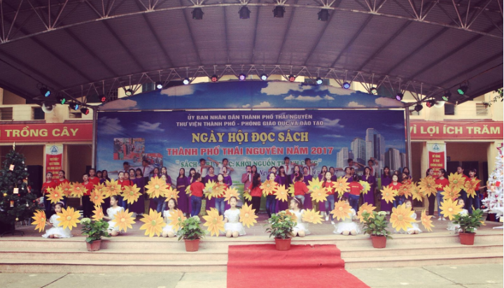
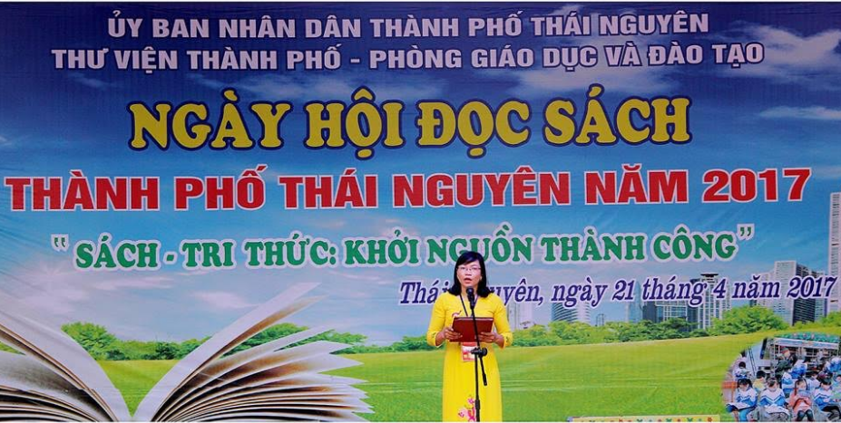
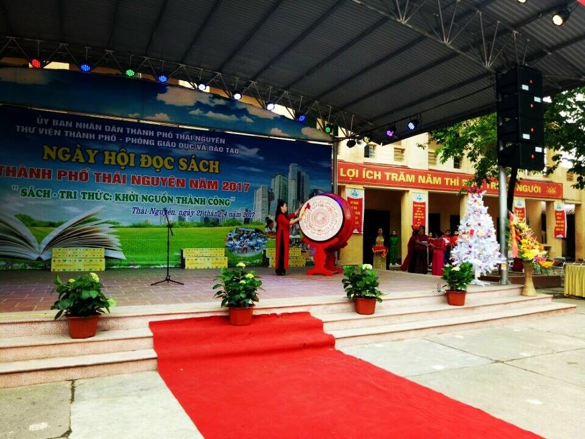
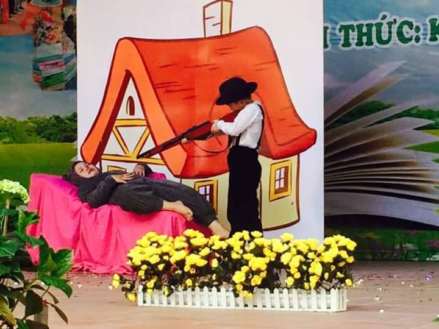
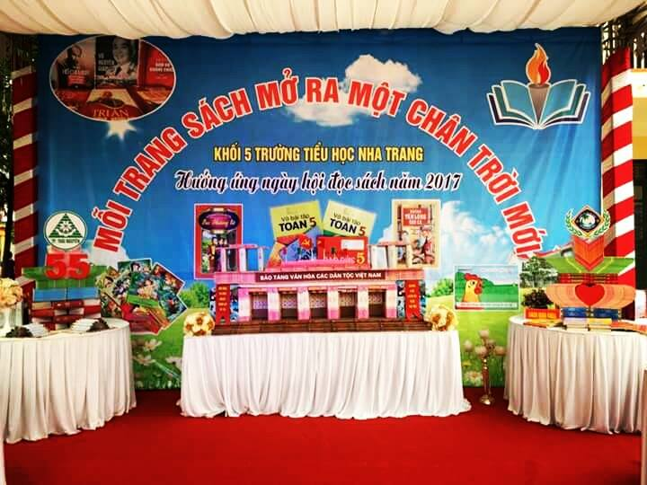
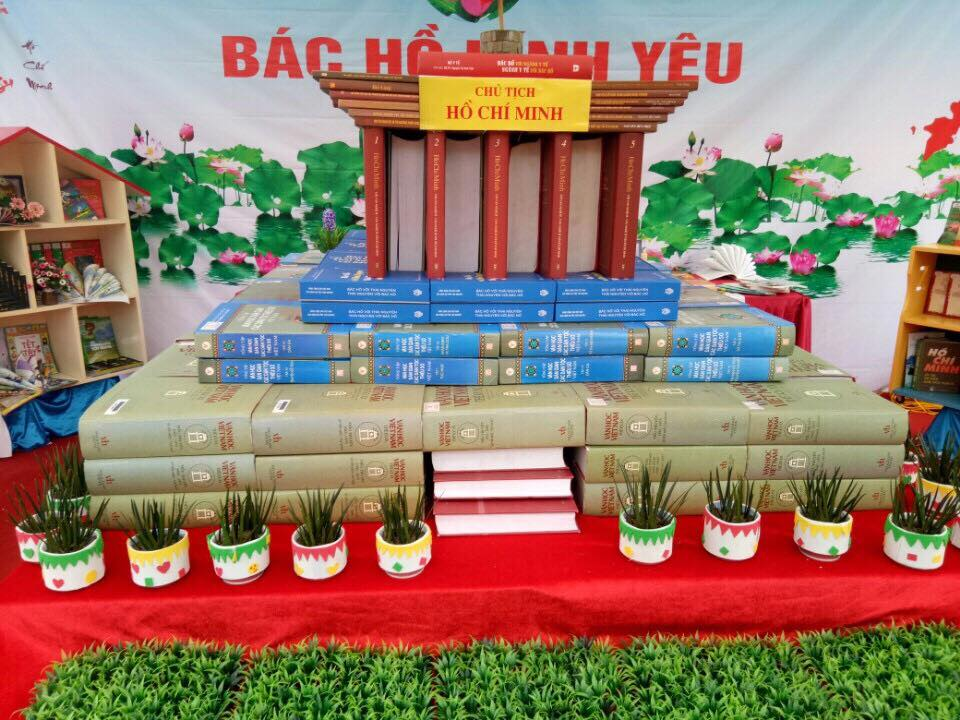
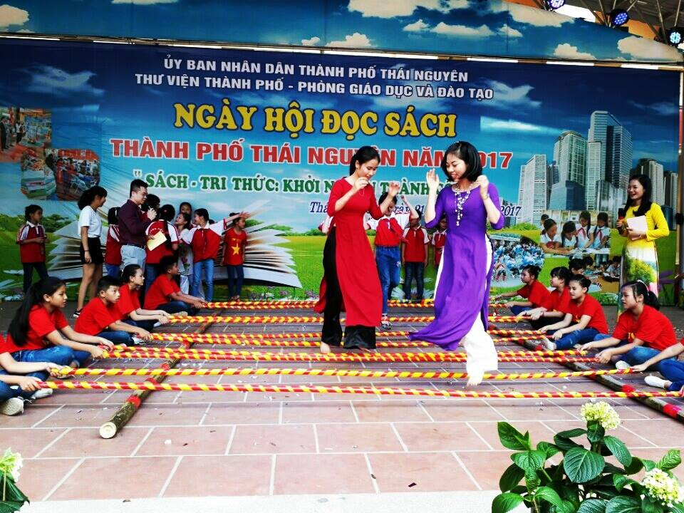
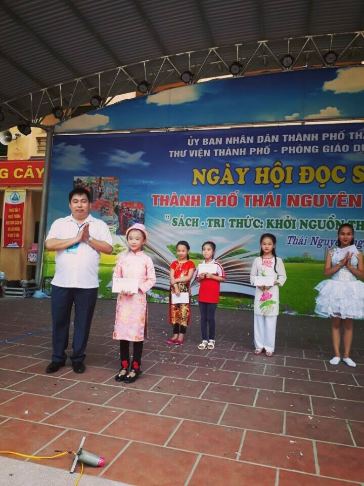
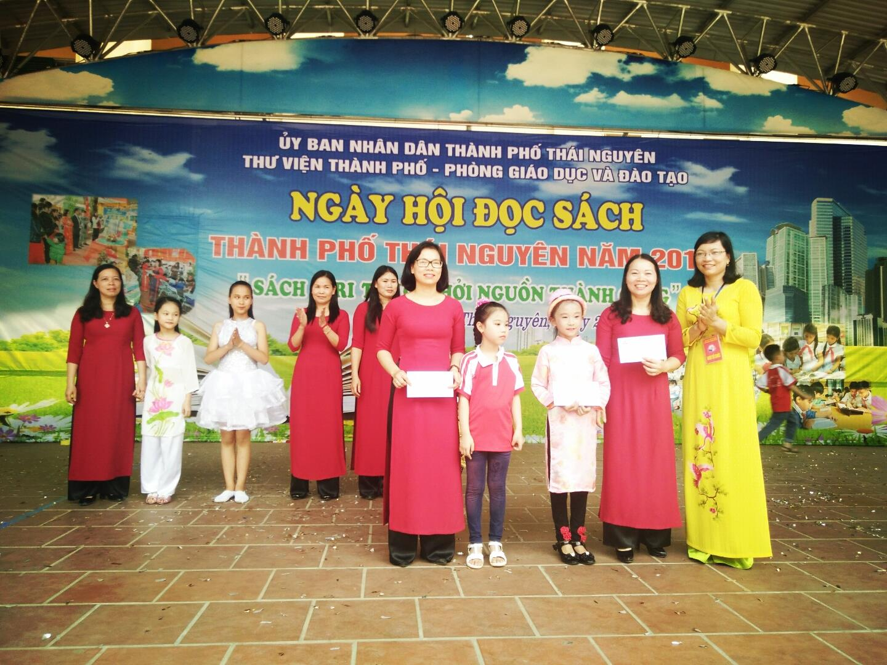

Trường Tiểu học Nha Trang với Ngày hội đọc sách thành phố Thái Nguyên năm 2017

Đến dự với Ngày hội đọc sách năm 2017 có Đ/c Hà Minh Lợi - Phó trưởng ban tuyên giáo tỉnh ủy Thái Nguyên, Đ/c Bùi Huy Toàn - Giám đốc Bảo tàng tỉnh Thái Nguyên, Đ/c Phạm Minh Tuấn – Phó giám đốc Thư viện tỉnh Thái Nguyên; Đ/c Vũ Quốc Khánh – Phó trưởng ban tuyên giáo thành ủy Thái Nguyên; Đ/c Nguyễn Tiến Vương – Phó trưởng ban Kinh tế XH – HĐND TP Thái Nguyên; Đ/c Lê Xuân Hải – Phó trưởng phòng GD&ĐT TP. Thái Nguyên cùng các vị đại biểu đại diện các phòng, ban, ngành, đoàn thể của tỉnh và thành phố, công an tỉnh Thái Nguyên, Phòng cảnh sát phòng cháy chữa cháy tỉnh Thái Nguyên, đại biểu của UBND 27 xã, phường; Đại biểu trong Ban giám hiệu, giáo viên Tổng phụ trách Đội các trường tiểu học và THCS toàn thành phố, cán bộ quản lý 120 tủ sách cơ sở của thành phố Thái Nguyên… cùng toàn thể các thầy giáo, cô giáo, các bậc phụ huynh và 1173 hoc sinh trường tiểu học Nha Trang. Đến dự và đưa tin về Ngày hội đọc còn có phóng viên Đài truyền hình tỉnh Thái Nguyên; Đài truyền thanh - truyền hình thành phố Thái Nguyên.
Mở đầu ngày hội đọc sách Đ/c Nguyễn Thị Linh – Giám đốc Thư viện thành phố đã khái quát về lịch sử ra đời cũng như tầm quan trọng của sách, của văn hóa đọc và tuyên bố khai mạc “Ngày hội đọc sách năm 2017”.

Tiếp theo Đ/c Phạm Thị Bích - Hiệu trưởng trường tiểu học Nha Trang đánh trống khai hội.

Ngay sau tiếng trống khai hội các đơn vị: Thư viện tỉnh, thư viện thành phố, công an tỉnh tặng sách cho thư viện trường tiểu học Nha Trang. Em Đàm Mai Chi – Liên đội trưởng thay mặt các em đội viên và nhi đồng toàn liên đội trao tặng thư viện nhà trường 1235 quyển truyện và 117 quyển sách. Đây sẽ là nguồn sách quý được bổ sung cho tủ sách của nhà trường để các thầy cô giáo và các bạn học sinh tìm hiểu, học tập, trau dồi kiến thức.
Nội dung thu hút sự quan tâm của đông đảo đại biểu tham gia ngày hội đọc là “Thi kể chuyện theo sách”. Theo đánh giá của Ban giám khảo, phần thi Kể chuyện theo sách được các khối lựa chọn đúng chủ đề, có xuất xứ, nội dung phù hợp với lứa tuổi, có tính nhân văn sâu sắc. Các câu chuyện đều có phần minh họa được dàn dựng công phu, sáng tạo, làm sinh động câu chuyện được kể. Từ những câu chuyện cổ tích về tình cảm gia đình mang tính giáo dục cao như câu chuyện: “Cái sọt tre” qua giọng kể của em Yến Nhi đến từ lớp 3B, đến những câu chuyện cảm động về tình người bao la, tình mẫu tử thiêng liêng đều được các em thể hiện hết mình như câu chuyện “Bà mẹ một mắt” do em Ngọc Vân lớp 5E thể hiện. Bên cạnh đó, câu chuyện “Người con gái miền đất đỏ” cũng được em Vũ Thị Thảo Uyên lớp 4G thể hiện khá hay và mang giá trị nhân văn sâu sắc. Một số em có giọng kể truyền cảm, nét mặt linh hoạt biểu hiện cảm xúc, em đã dẫn dắt người nghe cuốn vào câu chuyện của mình và hoàn toàn chinh phục được Ban giám khảo đó là các chuyện: “Cậu bé Tích Chu” của em Minh Anh đến từ lớp 1C và “Cô bé quàng khăn đỏ” của em Khánh Linh - lớp 2E.

Ngày Hội đọc sách còn sôi động hơn với phần thi “Xếp sách nghệ thuật”. Trong phần thi này, các đội thi đã có sự chuẩn bị khá công phu, mô hình được các đội thi lựa chọn phong phú và sinh động: Khuê Văn Các (Khối 1), Lăng Chủ tịch Hồ Chí Minh (Khối 4), Bản đồ Việt Nam và Ngọn hải đăng (Khối 3), Con thuyền tri thức (Khối 2) và đặc biệt mô hình “Bảo tàng Văn hóa các dân tộc Việt Nam” (Khối 5) là một công trình kiến trúc đẹp và là niềm tự hào của mỗi người dân Thái Nguyên. Cùng với mô hình sách được xếp sáng tạo và nghệ thuật là những bài thuyết trình về ý nghĩa mô hình sách lôi cuốn, hấp dẫn đã tạo được ấn tượng đẹp cho người xem.

Gian trưng bày sách khối 5 chủ đề: "Thành phố Thái Nguyên Hội nhập và phát triển"

Mô hình xếp sách nghệ thuật "Lăng chủ tịch Hồ Chí Minh" - Khối 4
Một nội dung được các em yêu mĩ thuật tham gia đông đảo là phần thi vẽ tranh với chủ đề “Em yêu thành phố Thái Nguyên”, bằng chất liệu màu nước, màu sáp trên khổ giấy A2, các em thiếu nhi đã thể hiện các tác phẩm của mình xoay quanh các nội dụng như: các danh lam thắng cảnh, điểm du lịch nổi tiếng, các công trình lớn của thành phố... Hội thi là dịp để các em thể hiện tình yêu của mình với thành phố Thái Nguyên, cùng chung tay xây dựng thành phố quê hương ngày càng giàu đẹp văn minh. Qua phần thi sơ khảo, ban tổ chức đã lựa chọn 12 tranh để trưng bày và trao giải trong Ngày hội đọc, đó là các tác phẩm: Thành phố bên Sông Cầu, Thái Nguyên – thành phố tương lai, Thái Nguyên – thành phố xanh, bể bơi Núi Cốc quê em, quê em miền Trung du …
Bên cạnh các nội dung trên, ngày hội còn diễn ra các hoạt động phụ trợ: Cây tri thức; truy cập Intrnet; trò chơi vận động như: Bịt mắt đánh trống, kéo co, nhảy sạp… tất cả các hoạt động đó hòa quện với nhau tạo nên không khí rất “hội” cho các đại biểu và toàn thể thầy – trò trường tiểu học Nha Trang.

Cô - trò trường tiểu học Nha Trang cùng giao lưu nhảy sạp trong ngày hội đọc.
Kết thúc Ngày hội đọc, ban tổ chức đã trao nhiều giải thưởng cho các cá nhân và tập thể đạt giải trong các phần thi. Trong đó:
Giải Nhất phần thi kể chuyện theo sách: đã được trao cho câu chuyện “Cái sọt tre” (em Yến Nhi – khối 3)

Đ/c Lê Xuân Hải - Phó trưởng phòng GD&ĐT thành phố Thái Nguyên trao giải phần thi kể chuyện theo sách
Giải Nhất phần thi “trưng bày, xếp sách nghệ thuật”: thuộc về gian trưng bày sách khối 5 với chủ đề “Thành phố Thái Nguyên – hội nhập và phát triển” chào mừng 55 năm thành lập thành phố Thái Nguyên (1962-2017)

Đ/c Nguyễn Thị Linh - Giám đốc thư viện thành phố trao giải phần thi trưng bày sách nghệ thuật.
Ngày hội đọc sách năm 2017 đã khép lại song thông qua các hoạt động thiết thực, Ngày hội đọc sách đã phát đi một thông điệp: Hãy tích cực đọc sách, coi đọc sách là phương cách quan trọng nhất để tiếp thu tinh hoa nhân loại, là con đường ngắn nhất, đáng tin cậy nhất giúp mọi người đạt nhiều thành công trong cuộc sống, trân trọng các giá trị để thêm quý thêm yêu cuộc sống. Hy vọng các em học sinh, các cán bộ giáo viên, nhân viên trong Nhà trường sẽ nâng cao hơn nữa tinh thần học tập, tự rèn luyện cho mình niềm yêu thích đọc sách để bổ sung kiến thức kỹ năng, nâng cao chất lượng dạy và học, phát triển toàn diện nhân cách cho thế hệ trẻ sau này.